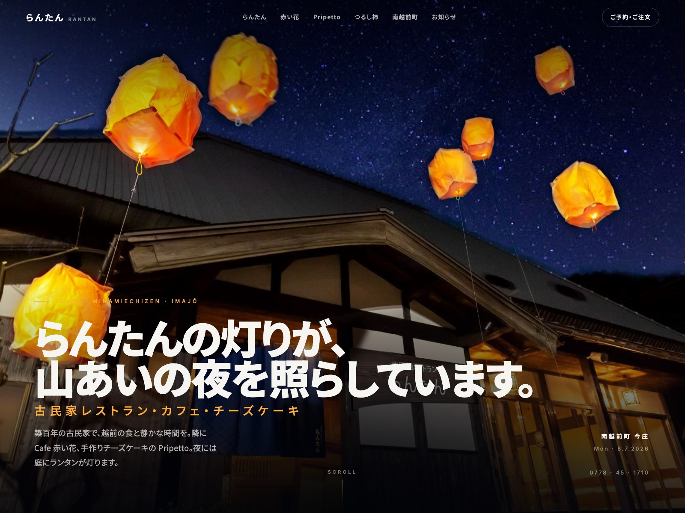
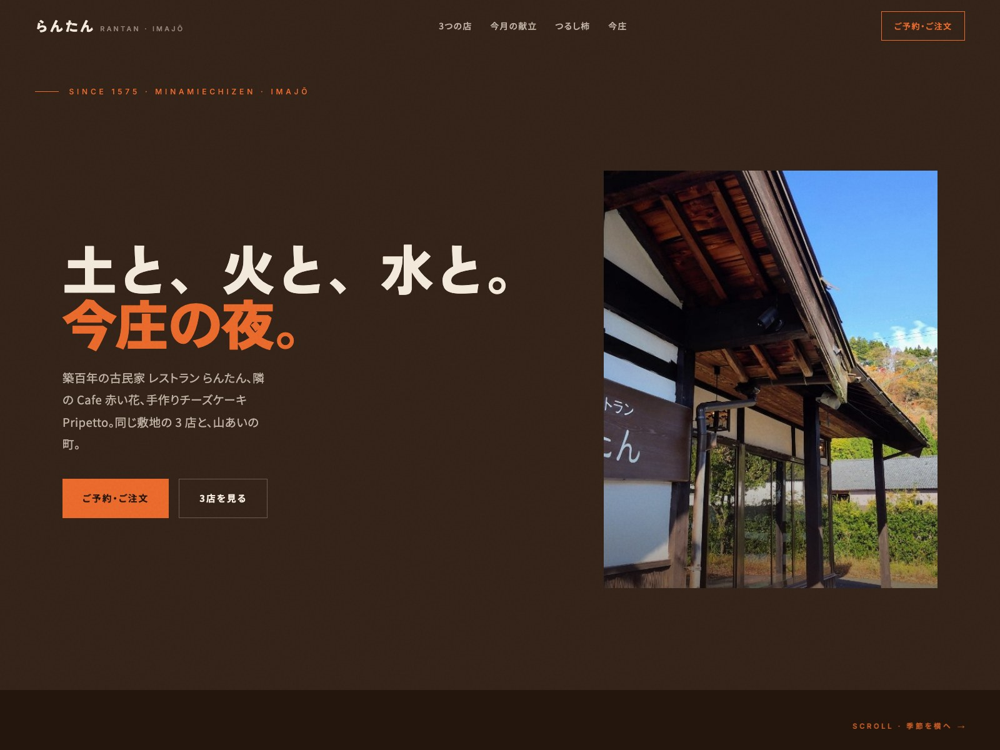
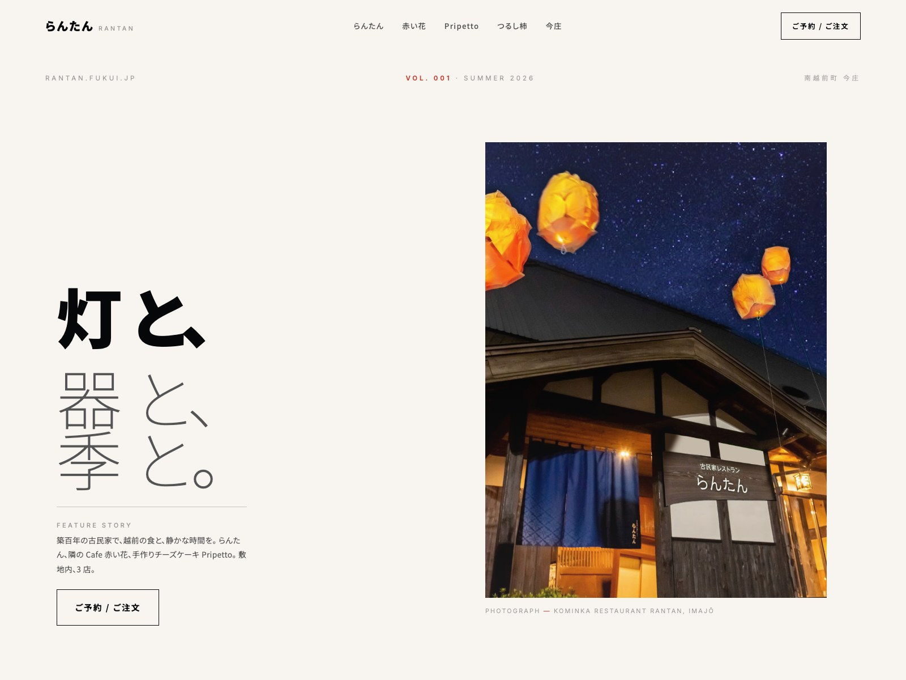

Option A
🛒 ECサイト完備

Option A
夜と灯り。Ryōkan Nightfall
深い夜の色をベースに、庭のランタンの灯りが差す落ち着いた editorial テイスト。 記念日ディナー、県外からの旅行、静かな時間を求めるお客様に。
- Mood夜の古民家 / 一度きりの旅の名残
- Palette深い藍 · 灯りの琥珀色
- Signature実写のランタン夜空ヒーロー
- ECカート → 注文フォーム → 完了ページ 完備
Option B

Option B
土と手ざわり。Kominka Kraft
焙じ茶のような温かい色をベースに、柿と苔の差し色。 地元のお客様、季節ごとの通い客、贈答目的の方に響くテイスト。 今月の献立が横に流れます。
- Mood昼の縁側 / 手ざわり、うつわ
- Palette焙じ茶 · 柿 · 苔
- Signature横スクロールの季節タイムライン
Option C

Option C
紙と余白。Editorial Whisper
紙のように白い背景に、朱を一点。 余白を広くとった雑誌のようなレイアウト。 BtoB、ライフスタイル媒体、東京のカフェオーナーなど審美眼のお客様に。
- Moodmuseum-quality · 沈黙と余白
- Palette紙白 · 墨 · 朱一点
- Signature大量の余白 + 極端な weight ジャンプ